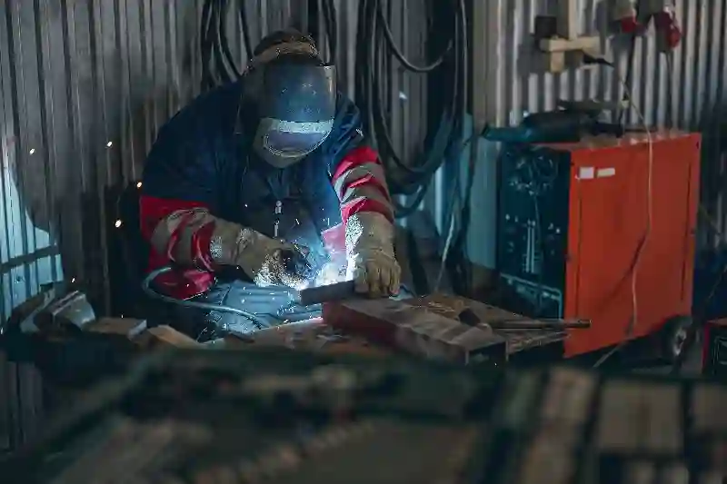
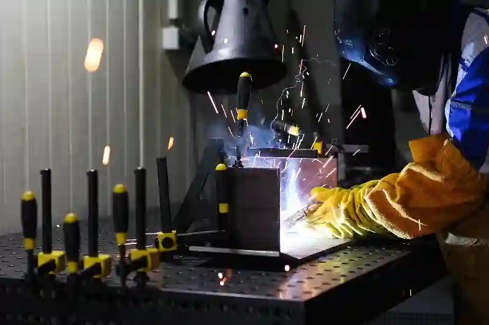
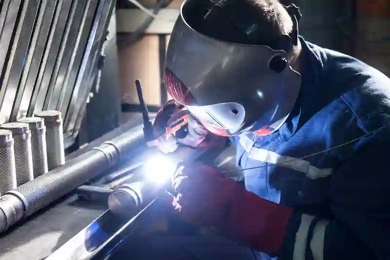
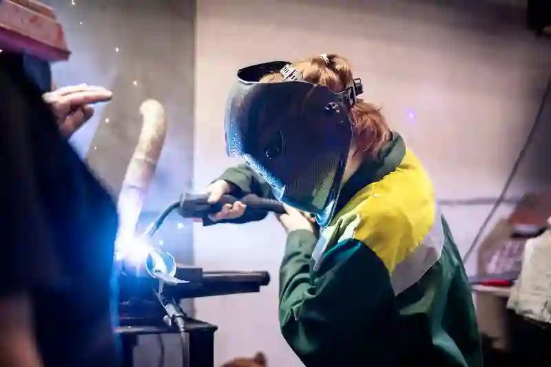

Kaynak ve Montaj Hizmetleri ile Endüstriyel Üretimde Yapısal Güç
Endüstriyel üretimde bir parçanın fonksiyonel değeri yalnızca işlenme hassasiyetiyle değil, montaj ve kaynak kalitesiyle de doğrudan ilişkilidir. Kaynak ve montaj hizmetleri, talaşlı imalatla elde edilen bileşenlerin nihai ürüne dönüşmesini sağlayan kritik bir üretim aşamasıdır. AYMAKSAN, bu süreci yalnızca birleştirme işlemi olarak değil; mühendislik, tolerans yönetimi ve kalite güvence odaklı entegre bir üretim disiplini olarak ele alır.
Modern sanayide kullanılan çelik, alüminyum ve alaşımlı metallerin farklı mekanik özellikleri, her projede özel kaynak tekniklerinin uygulanmasını zorunlu kılar. Bu noktada endüstriyel kaynak ve montaj çözümleri, üretim güvenliği ve uzun ömürlü kullanım açısından belirleyici rol oynar. AYMAKSAN, CNC destekli üretim altyapısı ile uyumlu kaynak planlaması yaparak, montaj sonrası deformasyon risklerini minimize eder.
Endüstriyel Kaynak ve Montaj Süreçlerinin Üretimdeki Rolü
Sanayi tipi üretimlerde kaynak ve montaj, parçaların sadece bir araya getirilmesi değil; yük taşıma, titreşim direnci ve yapısal bütünlüğün garanti altına alınması anlamına gelir. Özellikle makine imalatı, savunma sanayi, otomotiv ve enerji sektörlerinde kaynak ve montaj hizmetleri, ürün performansını doğrudan etkileyen stratejik bir aşamadır.
AYMAKSAN bünyesinde uygulanan montaj süreçleri, daha önce gerçekleştirilen CNC tornalama ve frezeleme operasyonlarıyla tam uyumlu şekilde planlanır. Bu sayede CNC üretim destekli kaynak hizmetleri, ölçüsel sapmaları ortadan kaldırır ve seri üretimde standardizasyon sağlar. Her montaj hattı, proje bazlı olarak tolerans analizine tabi tutulur.




Kaynak Kalitesinin Mekanik Dayanım Üzerindeki Etkisi
Birleştirilen parçaların uzun vadeli performansı, kaynak dikişinin penetrasyon derinliği, ısı dağılımı ve metalürjik uyumu ile doğrudan ilişkilidir. Bu nedenle özel parça kaynak montaj imalatı, yalnızca deneyim değil, teknik kontrol gerektirir. AYMAKSAN’da uygulanan kaynak yöntemleri, üretim sonrası gerilimleri minimize edecek şekilde optimize edilir.
Bu yaklaşım, özellikle yüksek yük altında çalışan makine bileşenlerinde çatlak oluşumunu önler ve servis ömrünü uzatır. Montaj sonrası yapılan görsel ve ölçümsel kontroller, kalite standartlarının sürekliliğini sağlar.
Talaşlı İmalat ile Entegre Montaj Yaklaşımı
AYMAKSAN’ın fark yaratan üretim modeli, kaynak ve montaj hizmetlerini diğer üretim disiplinlerinden bağımsız ele almamasıdır. Özel Talaşlı İmalat, CNC Tornalama ve CNC Frezeleme / Dik İşleme süreçleriyle elde edilen parçalar, montaj aşamasına geçmeden önce üretim verileriyle analiz edilir.
Bu entegre yapı sayesinde, montaj sırasında revizyon ihtiyacı minimuma indirilir. Parçaların birbirleriyle olan uyumu, daha montaj başlamadan dijital ortamda değerlendirilir. Böylece hassas metal montaj hizmetleri, tekrar eden projelerde dahi tutarlı kalite sunar.
Kaynak ve Montaj Hizmetlerinde Uygulanan Standartlar
Endüstriyel üretimde kalite, yalnızca sonuçla değil süreçle ölçülür. Bu nedenle kaynak ve montaj hizmetleri, ulusal ve uluslararası standartlara uygun şekilde yürütülmelidir. AYMAKSAN, üretim süreçlerinde TSE ve ISO referanslarını esas alır. Kaynaklı imalatlarda kalite güvencesi, ulusal ve uluslararası standartlarla desteklenmelidir. TSE kaynaklı imalat standartları
Endüstriyel üretimde kaynak ve montaj süreçlerinin güvenilirliği, uygulanan teknik standartlarla doğrudan ilişkilidir. Bu standartlar; ölçüsel doğruluk, yapısal dayanım ve uzun vadeli kullanım güvenliği açısından referans kabul edilir. Üretim sürecinde kullanılan yöntemler, ilgili ulusal ve uluslararası normlara uygun olarak planlanır ve kayıt altına alınır. Bu yaklaşım, hem seri üretimde hem de proje bazlı çalışmalarda kalite sürekliliğini destekler. Özellikle denetim gerektiren sektörlerde kaynak ve montaj hizmetleri, izlenebilirlik ve dokümantasyon temelli bir sistemle yürütülerek üretim riskleri en aza indirilir.
Kalite Kontrol & Ölçüm Hizmetleri ile Entegre Denetim
Montajı tamamlanan her parça, AYMAKSAN’ın Kalite Kontrol & Ölçüm Hizmetleri kapsamında kontrol edilir. Ölçüsel doğruluk, yüzey sürekliliği ve montaj simetrisi, üretim raporlarıyla kayıt altına alınır. Bu sistem, seri üretim projelerinde izlenebilirlik sağlar.
Projeni Başlat
Endüstriyel Kaynak Yöntemleri ve Uygulama Alanları
Endüstriyel üretimde doğru kaynak yöntemi seçimi, ürünün mekanik dayanımı, yüzey kalitesi ve uzun ömürlü kullanımı açısından kritik öneme sahiptir. Kaynak ve montaj hizmetleri, her proje için aynı teknikle değil; malzeme türü, parça geometrisi ve kullanım amacına göre belirlenen yöntemlerle uygulanmalıdır. AYMAKSAN, bu süreçte mühendislik analizini merkeze alarak üretim planlaması yapar.
Uygulanan kaynak yöntemleri, CNC ile işlenmiş parçaların toleranslarını bozmayacak şekilde seçilir. Bu yaklaşım, özellikle endüstriyel kaynak ve montaj çözümleri kapsamında tekrar edilebilir kalite ve proses güvenliği sağlar.
Farklı endüstriyel uygulamalar, farklı kaynak tekniklerinin kullanılmasını gerektirir. Parça geometrisi, malzeme türü ve kullanım koşulları, tercih edilecek yöntemi belirleyen temel unsurlardır. Seri üretim odaklı projelerde hız ve tekrarlanabilirlik ön plandayken, hassas parçalarda kontrollü ısı girdisi daha önemlidir. Bu nedenle kaynak yöntemleri, yalnızca teknik yeterlilikle değil, uygulama alanına uygunluk kriteriyle değerlendirilir. Doğru yöntem seçimi, üretim sonrası performansı doğrudan etkiler ve endüstriyel kaynak ve montaj çözümleri kapsamında kaliteyi belirleyici hale getirir.
MIG / MAG Kaynak Teknolojileri ile Seri Üretim Uyumu
MIG ve MAG kaynak yöntemleri, yüksek üretim hızları ve stabil dikiş kalitesi sayesinde seri üretim projelerinde yaygın olarak tercih edilir. Özellikle çelik konstrüksiyonlar, makine şaseleri ve taşıyıcı sistemlerde kaynak ve montaj hizmetleri kapsamında etkin çözümler sunar.
AYMAKSAN’da MIG/MAG kaynak uygulamaları, daha önce gerçekleştirilen CNC Tornalama ve CNC Frezeleme / Dik İşleme süreçleriyle tam uyumlu olacak şekilde planlanır. Bu sayede montaj sonrası düzeltme ihtiyacı minimize edilir ve makine parça montaj ve kaynak işlemleri yüksek verimlilikle tamamlanır.
TIG Kaynak ile Hassas ve İnce Kesitli Parça Birleştirme
TIG kaynak, özellikle alüminyum ve paslanmaz çelik gibi hassas malzemelerde tercih edilen, yüksek kontrol kabiliyeti sunan bir yöntemdir. Isı girdisinin kontrollü olması sayesinde deformasyon riski düşüktür. Bu özellik, hassas metal montaj hizmetleri açısından önemli bir avantaj sağlar.
TIG kaynak uygulamaları, prototip üretimlerinde ve düşük toleranslı parçalarda sıklıkla kullanılır. AYMAKSAN, bu yöntemi özel parça kaynak montaj imalatı projelerinde kalite odaklı bir üretim yaklaşımıyla uygular.
Kaynak ve Montaj Süreçlerinde Malzeme Uyumu
Her metal ve alaşım, farklı ısıl ve mekanik davranışlara sahiptir. Bu nedenle kaynak ve montaj hizmetleri, malzeme bilgisi yüksek teknik ekipler tarafından yürütülmelidir. Yanlış kaynak parametreleri, parçanın mukavemetini düşürebileceği gibi uzun vadede çatlak ve deformasyon riskini artırır.
AYMAKSAN, üretimde kullanılan malzemeleri kaynak öncesinde teknik analizden geçirir. Bu süreç, CNC üretim destekli kaynak hizmetleri kapsamında kalite sürekliliğini garanti altına alır.
Kaynaklı imalatlarda malzeme uyumu, sürecin en kritik teknik başlıklarından biridir. Farklı metal ve alaşımların ısıl davranışları, kaynak sırasında oluşabilecek gerilmeleri doğrudan etkiler. Bu nedenle malzeme seçimi, kaynak parametreleriyle birlikte değerlendirilmelidir. Uygun olmayan kombinasyonlar, uzun vadede çatlak, deformasyon veya mukavemet kaybına yol açabilir. Üretim sürecinde yapılan teknik analizler, bu risklerin önüne geçmeyi amaçlar. Özellikle hassas tolerans gerektiren projelerde hassas metal montaj hizmetleri, malzeme uyumunun doğru yönetilmesiyle güvenilir sonuçlar sağlar.
Çelik ve Alaşımlı Malzemelerde Kaynak Yaklaşımları
Çelik ve alaşımlı metaller, endüstriyel üretimde en yaygın kullanılan malzeme gruplarındandır. Ancak her çelik türü, aynı kaynak davranışını göstermez. Bu nedenle ön ısıtma, kaynak teli seçimi ve soğuma süreci titizlikle planlanmalıdır.
Bu yaklaşım, özellikle Ankara kaynak ve montaj firması arayışında olan sanayi kuruluşları için güvenilir bir üretim altyapısı sunar. Kaynaklı imalatlarda malzeme uyumu, teknik standartlara göre belirlenmelidir. Kaynaklı imalat teknik rehberi – Makina Mühendisleri Odası – teknik yayınlar ve sektörel rehberler
Montaj Süreçlerinde Hassasiyet ve Ölçüsel Doğruluk
Montaj aşaması, tek tek doğru üretilmiş parçaların birlikte kusursuz çalışmasını sağlayan kritik bir üretim adımıdır. Kaynak ve montaj hizmetleri, bu nedenle yalnızca birleştirme değil, ölçüsel uyum yönetimi olarak değerlendirilmelidir.
AYMAKSAN’da montaj süreçleri, üretim öncesi hazırlanan teknik resimler ve tolerans tablolarına göre yürütülür. Bu sistem, hassas metal montaj hizmetleri kapsamında tekrar edilebilir sonuçlar elde edilmesini sağlar.
Proses İçi Kontroller ile Montaj Güvenliği
Montaj sırasında yapılan proses içi kontroller, hatalı birleşimlerin erken aşamada tespit edilmesini sağlar. Bu yaklaşım, Kalite Kontrol & Ölçüm Hizmetleri ile entegre şekilde yürütülür ve üretim kayıplarını önler.
Projeni Başlat
Sektörel Üretimlerde Kaynak ve Montaj Hizmetlerinin Kullanım Alanları
Endüstriyel sektörlerin her biri, farklı yük koşulları, çevresel etkenler ve çalışma prensipleri gerektirir. Bu nedenle kaynak ve montaj hizmetleri, tek tip çözümlerle değil; sektör bazlı mühendislik yaklaşımıyla uygulanmalıdır. AYMAKSAN, hizmet verdiği sektörlerin teknik gereksinimlerini analiz ederek üretim süreçlerini buna göre yapılandırır.
Makine imalatından enerji sistemlerine kadar uzanan geniş uygulama alanlarında endüstriyel kaynak ve montaj çözümleri, ürün güvenliği ve operasyonel verimlilik açısından belirleyici bir rol üstlenir.
Makine ve Endüstriyel Ekipman İmalatında Montaj Süreçleri
Makine ve endüstriyel ekipman üretiminde montaj, fonksiyonel bütünlüğün sağlandığı en kritik aşamadır. Gövde, şase ve hareketli mekanizmaların bir araya gelmesi, yüksek hassasiyet gerektirir. Bu noktada makine parça montaj ve kaynak işlemleri, ölçüsel doğruluk ve yapısal dayanım açısından titizlikle yürütülmelidir.
AYMAKSAN, bu süreçte CNC üretim destekli kaynak hizmetleri ile üretilmiş parçaları montaj aşamasına entegre eder. Bu yaklaşım, montaj sonrası ayar ve düzeltme ihtiyacını minimum seviyeye indirir.
Otomotiv ve Taşıt Sistemlerinde Kaynaklı Montaj Uygulamaları
Otomotiv ve taşıt sistemleri, dinamik yükler altında çalışan ve yüksek güvenlik standartlarına sahip olması gereken yapılardır. Bu nedenle kullanılan kaynak ve montaj hizmetleri, titreşim dayanımı ve uzun süreli performans esas alınarak planlanır.
Şasi bileşenleri, bağlantı elemanları ve taşıyıcı parçalar, özel parça kaynak montaj imalatı kapsamında sektör normlarına uygun şekilde birleştirilir. Bu üretim disiplini, seri üretimde kalite sürekliliğini destekler.
Enerji, Savunma ve Altyapı Projelerinde Kaynak ve Montaj
Enerji ve altyapı projeleri, yüksek mukavemet ve uzun servis ömrü gerektiren bileşenlerden oluşur. Bu projelerde kullanılan kaynak ve montaj hizmetleri, yalnızca mekanik dayanım değil, çevresel koşullara karşı direnç de sağlamalıdır.
AYMAKSAN, enerji ve ağır sanayi projelerinde uyguladığı hassas metal montaj hizmetleri ile üretim güvenliğini üst seviyeye taşır.
Enerji Sistemleri ve Mekanik Bileşen Montajları
Enerji üretim ve iletim sistemlerinde kullanılan mekanik bileşenler, yüksek basınç ve sıcaklık altında çalışır. Bu nedenle kaynak dikişlerinin sürekliliği ve malzeme uyumu büyük önem taşır. Endüstriyel kaynak ve montaj çözümleri, bu tür projelerde kaliteyi doğrudan etkiler. Enerji sektöründe kullanılan mekanik bileşenler, ilgili teknik mevzuatlara uygun olarak üretilmelidir. T.C. Enerji ve Tabii Kaynaklar Bakanlığı – sektörel mevzuat ve teknik çerçeve – enerji ekipmanları teknik standartları
Savunma ve Güvenlik Odaklı Üretimlerde Montaj Hassasiyeti
Savunma sanayi projelerinde toleranslar son derece düşüktür ve montaj hatalarının telafisi çoğu zaman mümkün değildir. Bu nedenle Ankara kaynak ve montaj firması tercihlerinde, teknik yeterlilik ve süreç disiplini ön planda tutulur.
AYMAKSAN, savunma ve güvenlik odaklı projelerde montaj süreçlerini kontrollü üretim alanlarında gerçekleştirir. Bu yaklaşım, kaynak ve montaj hizmetleri kapsamında güvenilirlik ve izlenebilirlik sağlar.
Prototip Üretim & Ar-Ge Desteği ile Kaynak ve Montaj Entegrasyonu
Yeni ürün geliştirme süreçlerinde prototip üretimi, seri üretim öncesi en önemli test aşamasıdır. Prototip Üretim & Ar-Ge Desteği, kaynak ve montaj süreçlerinin erken aşamada değerlendirilmesini sağlar.
AYMAKSAN, prototip projelerinde montaj senaryolarını önceden analiz ederek, seri üretime geçişte karşılaşılabilecek riskleri minimize eder. Bu sayede hassas metal montaj hizmetleri, yalnızca mevcut projelerde değil, geleceğe yönelik ürün geliştirmelerde de katma değer üretir.
Prototipten Seri Üretime Geçişte Montaj Stratejileri
Prototip aşamasında elde edilen veriler, seri üretimde kullanılacak montaj fikstürlerinin ve kaynak parametrelerinin belirlenmesinde yol gösterici olur. Bu strateji, üretim sürekliliği ve kalite standardizasyonu sağlar.
Projeni Başlat
Kaynak ve Montaj Süreçlerinde Kalite Kontrol ve İzlenebilirlik
Endüstriyel üretimde kalite, yalnızca nihai ürünle değil; tüm üretim adımlarının kontrol edilebilir ve izlenebilir olmasıyla sağlanır. Kaynak ve montaj hizmetleri, bu nedenle kalite kontrol süreçleriyle entegre şekilde yürütülmelidir. AYMAKSAN, montaj öncesi, proses içi ve montaj sonrası kontrolleri kapsayan sistematik bir denetim yaklaşımı uygular.
Bu yapı, endüstriyel kaynak ve montaj çözümleri kapsamında hem tekil projelerde hem de seri üretim süreçlerinde tutarlı kalite sunulmasını sağlar.
Montaj Öncesi Teknik Kontroller ve Hazırlık Süreci
Montaj başlamadan önce parçaların ölçüsel uygunluğu, yüzey durumu ve teknik resimlerle uyumu detaylı şekilde incelenir. Bu aşamada CNC üretim destekli kaynak hizmetleri ile üretilmiş bileşenlerin tolerans değerleri kontrol edilir.
Bu yaklaşım, montaj sırasında ortaya çıkabilecek uyumsuzlukları önler ve makine parça montaj ve kaynak işlemleri için güvenli bir başlangıç sağlar.
Proses İçi Denetimler ile Hata Riskinin Azaltılması
Kaynak ve montaj sırasında yapılan proses içi denetimler, hataların erken aşamada tespit edilmesini mümkün kılar. Kaynak dikişlerinin sürekliliği, montaj simetrisi ve bağlantı noktalarının dayanımı düzenli olarak kontrol edilir.
Bu sistem, özellikle özel parça kaynak montaj imalatı projelerinde tekrar işleme maliyetlerini düşürür ve üretim verimliliğini artırır.
Montaj Sonrası Testler ve Fonksiyonel Kontroller
Montajı tamamlanan ürünlerin, gerçek çalışma koşullarına uygun şekilde test edilmesi kalite güvence sürecinin ayrılmaz bir parçasıdır. Kaynak ve montaj hizmetleri, bu aşamada yalnızca görsel kontrolle sınırlı kalmaz; fonksiyonel ve mekanik testlerle desteklenir.
AYMAKSAN, montaj sonrası test süreçlerini Kalite Kontrol & Ölçüm Hizmetleri ile entegre biçimde yürütür. Bu yaklaşım, hassas metal montaj hizmetleri kapsamında güvenilir sonuçlar elde edilmesini sağlar.
Ölçümsel Doğrulama ve Tolerans Kontrolleri
Montaj sonrası ölçümler, ürünün teknik resimlerde belirtilen toleranslara uygunluğunu doğrular. Bu süreçte kullanılan ölçüm ekipmanları, izlenebilirlik ve raporlanabilirlik esasına göre seçilir. Endüstriyel ölçüm ve kalite kontrol süreçleri, ulusal standartlarla uyumlu şekilde yürütülmelidir. TÜRKAK – Türk Akreditasyon Kurumu, ölçüm ve kalite altyapısı – endüstriyel ölçüm ve kalite kontrol standartları
Montaj Sonrası Dayanım ve Fonksiyon Testleri
Fonksiyon testleri, montajı tamamlanan parçaların gerçek kullanım senaryolarında nasıl davrandığını ortaya koyar. Bu testler sayesinde olası yapısal zayıflıklar erken aşamada tespit edilir. Endüstriyel kaynak ve montaj çözümleri, bu aşamada yalnızca üretim değil, güvenlik odaklı bir yaklaşım sunar.
Dokümantasyon ve Üretim Kayıtlarının Yönetimi
Endüstriyel projelerde dokümantasyon, üretim kadar önemlidir. Kaynak ve montaj hizmetleri kapsamında yapılan tüm işlemler; ölçüm raporları, kontrol formları ve test sonuçlarıyla kayıt altına alınır.
Bu sistem, özellikle Ankara kaynak ve montaj firması arayışında olan kurumsal müşteriler için şeffaflık ve güvenilirlik sağlar.
İzlenebilirlik ve Proje Bazlı Raporlama
Her proje için oluşturulan teknik dosyalar, üretim sürecinin her adımının geriye dönük olarak izlenmesini mümkün kılar. Bu yaklaşım, kalite standartlarının sürdürülebilirliğini destekler.
Projeni Başlat
AYMAKSAN’da Entegre Üretim Yaklaşımı
Endüstriyel projelerde sürdürülebilir kalite, üretim adımlarının birbirinden kopuk değil; entegre şekilde yönetilmesiyle mümkündür. Kaynak ve montaj hizmetleri, AYMAKSAN’da tek başına bir süreç olarak değil; tüm üretim zincirinin tamamlayıcı bir halkası olarak ele alınır. Bu yaklaşım, parça bazlı çözümler yerine sistem odaklı üretim sağlar.
AYMAKSAN’ın üretim modeli; talaşlı imalat, CNC işleme, kalite kontrol ve montaj süreçlerini tek çatı altında toplayarak projelerin uçtan uca yönetilmesine olanak tanır. Bu yapı, endüstriyel kaynak ve montaj çözümleri kapsamında zaman, maliyet ve kalite avantajı oluşturur.
Özel Talaşlı İmalat ile Kaynak ve Montaj Entegrasyonu
Özel Talaşlı İmalat süreçlerinde üretilen parçalar, daha tasarım aşamasında montaj senaryoları dikkate alınarak planlanır. Bu sayede kaynak noktaları, bağlantı yüzeyleri ve montaj toleransları önceden optimize edilir.
Bu yaklaşım, özel parça kaynak montaj imalatı projelerinde tekrar işleme ihtiyacını azaltır ve üretim sürekliliğini destekler.
CNC Tornalama ve Frezeleme ile Uyumlu Montaj Planlaması
CNC Tornalama ve CNC Frezeleme / Dik İşleme süreçlerinden çıkan parçalar, montaj aşamasında ölçüsel uyum avantajı sağlar. AYMAKSAN, bu üretim disiplinlerini CNC üretim destekli kaynak hizmetleri ile entegre ederek montaj sonrası sapmaları minimuma indirir.
Bu entegrasyon, makine parça montaj ve kaynak işlemleri için yüksek hassasiyet ve tekrar edilebilir kalite sunar.
Neden AYMAKSAN Kaynak ve Montaj Hizmetleri?
Sanayi kuruluşları için doğru üretim partneri, yalnızca teknik kapasiteyle değil; süreç disiplini ve mühendislik yaklaşımıyla belirlenir. Kaynak ve montaj hizmetleri alanında AYMAKSAN’ı farklılaştıran temel unsurlar şunlardır:
- Entegre üretim altyapısı
- Proje bazlı mühendislik planlaması
- Ölçülebilir kalite kontrol süreçleri
- Dokümantasyon ve izlenebilirlik
- Sektörel deneyim ve teknik yetkinlik
Bu yapı, Ankara kaynak ve montaj firması arayışında olan işletmeler için güvenilir ve uzun vadeli bir çözüm ortağı sunar.
Sonuç – Endüstriyel Üretimde Güçlü ve Güvenilir Birleştirme
Endüstriyel projelerde başarı, doğru işlenmiş parçaların doğru yöntemlerle birleştirilmesiyle elde edilir. Kaynak ve montaj hizmetleri, bu nedenle üretimin son adımı değil; ürün performansını belirleyen stratejik bir aşamadır.
AYMAKSAN, mühendislik destekli yaklaşımı, entegre üretim altyapısı ve kalite odaklı süreç yönetimiyle hassas metal montaj hizmetleri alanında sürdürülebilir çözümler sunar. Bu yaklaşım, yalnızca bugünün projeleri için değil; uzun vadeli iş birlikleri için de güçlü bir temel oluşturur.